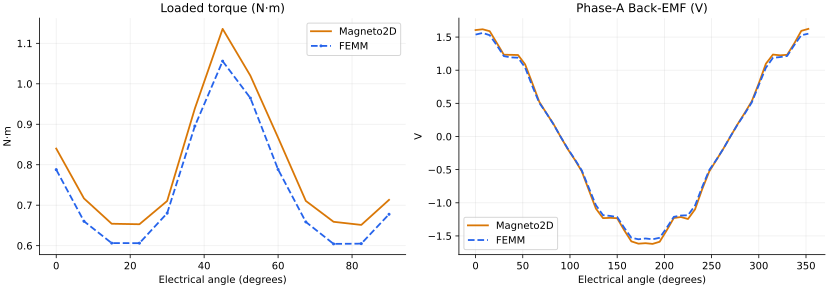
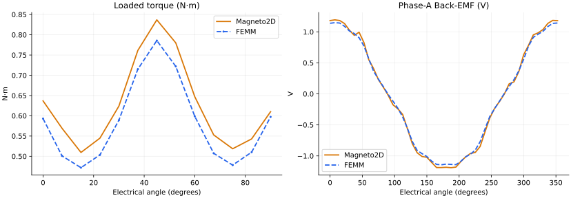

Two new physical designs PASS the unchanged registered gates. Original low-output cases and their FAILs remain archived in protocol 1.0.0. Protocol 1.1.0 replaces them in the default matrix. This addendum does not claim a solver fix, spatial mesh convergence, a new complete A/B/C/D sweep, or release qualification.
13 loaded points at 0–90°; 48 no-load points at 0–352.5°; 7.5° steps. Public normal native Gmsh, WST and Newton defaults; fresh matched normal FEMM. Torque PASS ≤8%; Back-EMF H1/peak PASS ≤10%.
PASS
Mean: Magneto2D 0.789964 / FEMM 0.737758 N·m; mean gap 7.08% (52.21 mN·m). Back-EMF H1 gap 3.49%; peak gap 3.95%.
Magnet legs 9 → 10 mm. All other physical and numerical request inputs retained.
Public input JSON · Openable .coilem file · Measurements and provenance

| Gate | Result |
|---|---|
| mean torque | PASS |
| bemf fundamental | PASS |
| bemf peak | PASS |
| torque method | PASS |
| native mesh | PASS |
| angle grids | PASS |
PASS
Mean: Magneto2D 0.625690 / FEMM 0.582518 N·m; mean gap 7.41% (43.17 mN·m). Back-EMF H1 gap 3.35%; peak gap 3.95%.
Magnet legs 9 → 12 mm. All other physical and numerical request inputs retained.
Public input JSON · Openable .coilem file · Measurements and provenance

| Gate | Result |
|---|---|
| mean torque | PASS |
| bemf fundamental | PASS |
| bemf peak | PASS |
| torque method | PASS |
| native mesh | PASS |
| angle grids | PASS |
Public candidate af56962e690ade4816e48f562e380249aac7542e; independently pinned reference harness 8b95decda27d475ddbb75e99d92744ebc8e53b28. M350-50A curve and N42 Br 1.315 T / μr 1.05 match. Audited public clockwise conversion; no fitted sign, scale or angle adjustment.
Summary · Evidence index · Retained historical A/B/C/D report